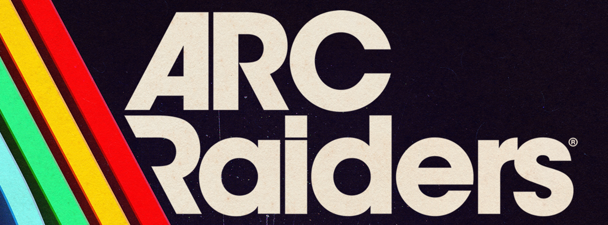
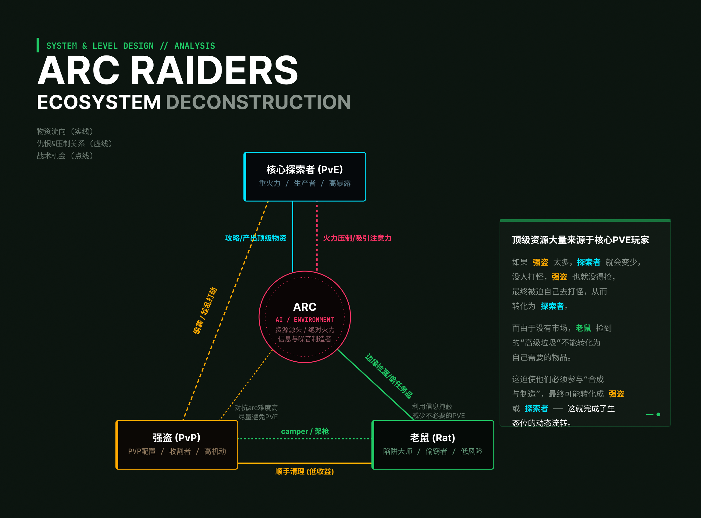

从《ARC Raiders》的系统切片看海外局内外循环构建
Part 1：基本循环拆解与设计逻辑洞察
在拆解一款搜打撤游戏时，我们通常会带入一套传统的经济学模型与长线养成框架——即"局内搜刮高价值物品→局外市场交易变现 → 购买顶级军备反哺局内战斗"的黄金三角。在这个闭环下，市场不仅是价值的锚点，更是驱动玩家重复体验的核心纽带。
但在当前的海外射击品类大盘中，赛道正经历着从"硬核生存"向"多元体验"的快速演变。作为近期跑出亮眼成绩的代表，《ARC Raiders》在其局内体验与局外系统的构建上，采取了极其反常识的"系统减法"。它并非完美，甚至在中后期的体验上充满痛点，但正是这些"痛点"，折射出了其对海外特定受众底色的精准顺应。
1. 经济循环的异化："无市场"生态下的沉浸感与深坑
《ARC Raiders》最核心的生态异变，源于它彻底移除了"玩家交易市场"这一万能解药。
从我们在分析中的拆解图表可以看出，当游戏没有市场来为"垃圾"托底时，玩家的循环纽带就断裂了。每一次撤离带出的物资只能用于死板的个人工作台升级或单线配方制造。随着进度的推进，这种设计必然导致普通玩家在制造台 2 级升 3 级时，陷入一个极其漫长的养成深坑——高级材料获取困难，低级材料失去价值，挫败感急剧上升。


那为什么要这么做？
如果我们拿《三角洲行动》来做横向对比，逻辑就非常清晰了。《三角洲行动》的烽火地带模式，本质上是以"局内爽快战斗"和"跨对局的财富积累与局外成长（搜刮囤积变现养成）"为双支柱的。为了支撑高烈度高频率的交战，它必须有一个"自由市场"让玩家将曼德尔砖或大金大红迅速变现，完成"破产-暴富"的短循环。
但《ARC Raiders》的底层逻辑不同，它的体验支柱中包含了 Role Play和与强大的敌人对抗等PVE元素。在欧美市场，由《使命召唤》、《战地》等老牌3A培养出的硬核射击用户，对视听沉浸感和"在废土中生存"的代入感有着天然的情感联结。"无市场"的设定，是基于目标玩家的习惯，将游戏目标强聚焦于特定的 PVE 掉落物和生存本身，是对这批欧美主机/PC 核心射击受众内容偏好的一次精准顺应。
2. 矛盾的循环：由"利益驱动"向"情绪驱动"降维的 PvP
在没有市场作为硬通货支撑的前提下，《ARC Raiders》的 PvP 体验呈现出一种强烈的撕裂感。
在大部分同类产品中，击杀玩家意味着掠夺对方的资产并在市场中变现，PVP 是一项高收益投资。但在 Arc 里，漫长的 TTK、极高的试错成本，加上对方身上爆出的专属材料大概率不是你当前需要的，导致 PvP 彻底沦为了一项高风险、低收益的"亏本买卖"。
这看起来像是一个失败的数值循环，但从更长线的体验维度来看，我认为这其实是一种目标管理策略。它实质上将游戏模糊地切分成了两个阶段：
- 成长期（PVE 导向）： 玩家为了升级工作台，专注于避战、搜刮、打败低级 AI，稳步建立循环。
- 平台期/终局（PvP 导向）： 当玩家完成阶段性目标（如击杀族母获取蓝图），陷入"长草期"时，游戏内容消耗殆尽。此时，PvP 不再承担经济增长的功能，而是完全转变为一种单纯的情绪消耗品。玩家去打架，纯粹是为了释放压力、寻找刺激和破坏他人的体验。
长线体验下来，结合ABMM（侵略性匹配机制）将核心成长体系与 PvP 剥离的做法，有效地避免了成长期玩家过早被老玩家当成"提款机"而流失，确立了游戏初期的生态稳态。

小结：
从传统的系统设计视角来看，《ARC Raiders》这种剥离市场、拉长养成深坑、且 PvP 收益极度不对等的设计，无疑是在走钢丝。按照常理，当大部分泛用户在几十个小时后撞上"制造台升 3 级"的资源高墙时，极易因动力缺失而引发断崖式的活跃度崩塌。
但反常识的数据却给出了截然不同的答案。在 2025 年末的那个窗口期，当传统的射击巨头纷纷陷入泥潭时，《ARC Raiders》却在 12 月迎来了一次不可思议的 U 型反转。
当常规的经济学循环似乎走入死局时，究竟是什么力量，支撑住了如此庞大的长线活跃数据？
Part 2：大盘红利与系统解法——"社会工程学"如何盘活脆弱的生态循环
正如我们在Part1的末尾所说，按照传统的系统框架，《ARC Raiders》那漫长的养成深坑与低收益的 PvP 机制，极易在中后期引发断崖式的玩家流失。但在静态的系统推演之外，如果我们切入到 2025 年末的真实市场环境中，会发现玩家用真实的活跃数据，给出了一个截然不同的答案。

1. "十二月奇迹"的背后：大盘真空与核心受众的"精准迁徙"
2025 年下半年是射击品类的"红海窗口"，但竞争格局却出人意料地迅速洗牌。
从大盘数据来看，被寄予厚望的《战地 6》在发售后面临了典型的"L型"崩塌，至 2026 年 1 月，其玩家流失率高达 85%-90% 。在这个关键节点，《ARC Raiders》在 12 月中旬画出了一条罕见的"J型"爆发曲线，并在 2026 年 1 月突破了全球 96 万 CCU（同时在线人数）。
这种逆势反转，不仅是产品自身的胜利。查看这些海外射击产品数据时我注意到一个趋势：大量的硬核玩家正在对传统的快节奏 TTK 感到疲劳。以《战地 6》为例，其地图设计的显著缩水导致整体体验更接近竞品《使命召唤》的快节奏"绞肉机"模式 。这种背弃"战术沙盒"传统的做法，引发了老玩家的强烈反弹。这批对快餐化射击感到失望、极度渴求"高压迫感、战术博弈与沉浸式生存"的欧美硬核用户，恰好在《ARC Raiders》那套高门槛、慢节奏的废土世界里，找到了最对味的体验。所以我推测，正是这批庞大且垂直的"难民潮"，为《ARC》注入了极其宝贵的大 DAU 基本盘。
2. 生态位的保护与隐忧：大 DAU 支撑下的 ABMM 机制推演
结合我们在局内梳理的"玩家生态与 AI 博弈关系图"可以发现，搜打撤的底层食物链极其脆弱：顶级资源大量来源于核心 PvE 玩家（探索者），如果任由 PvP 玩家（强盗）无成本地掠夺，探索者必然退坑，最终导致生态链断裂。
为了打破"见人就打"的黑暗森林纳什均衡，《ARC Raiders》实装了极具争议的侵略性匹配机制(ABMM):系统隐性记录玩家的 PvP/PvE 倾向，将和平的"探索玩家"与好战的"掠夺玩家"分流区隔 。它强行保护了底端的 PvE 探索者度过养成深坑，同时让寻求刺激的老玩家在"蛊毒大厅"中互相倾轧 。
但这引出了我的一个系统推论：这套社会工程学设计，极度依赖大的 DAU 作为底层支撑。
细分玩家行为倾向的匹配逻辑（无论是按侵略性、KD 还是装备价值），都会成倍地消耗匹配池深度。我推测，如果没有我们在上一节提到的那波庞大的"难民潮"作为水池支撑，ABMM 很难流畅运转。一旦游戏热度回落、DAU 下降，系统为了保证基础的匹配速度，大概率会被迫放宽倾向阀值，将"狼"和"羊"再次关进同一个大厅。如果这个推论成立，那么当下的生态稳态实际上是在用大盘红利走钢丝，一旦在线人数跌破某个临界值，底层 PvE 玩家的流失循环将再次开启。
3. 足够高的更新频率，"天气"版更为内容消耗提供缓冲
除了匹配机制的干预，为了对冲中后期地图熟悉带来的战术固化，12月上线的"寒潮"更新展现了教科书级别的环境叙事与玩法融合。新地图机制通过直接更改数个核心地点的物理法则与生存压力，为玩家带来持续不断的新体验：
- 视野剥夺与踪迹留存： 暴风雪不仅极大削弱了远程狙击的统治力，雪地还会让玩家的脚印清晰可见。这改变了单局的信息博弈权重，追踪与反追踪变得比正面枪法更重要。
- 动线与地貌的重塑： 冰雪导致的结冰和积雪会形成新的掩体和移动机制，让玩家固有策略发生变化，刷新已有的战术体验。
- 高压 DoT 与真实掩体判定： 冻伤成为了一个真实的持续伤害机制。角色在室外会积累积雪、发抖并持续掉血。
就寒潮版本本身而言，高危环境的设计，提升了局内"潜行、机动、路线规划"的战术权重，使得野外高烈度交火的成本急剧上升，变相压制了无意义的 PvP 冲动，让每一局体验都充满高压的变数。刷新了原有体验。从玩家曲线也能看出，正是这次更新，接住了下降的在线玩家趋势，迎来了一波明显的逆势上升。
Part 3：社区中充满了不满的声音，但《Arc Raiders》的系统设计失败了吗？
在确立了大盘红利与匹配机制的宏观基调后，将视角拉回最微观的玩家切片。基于 2025 年 12 月至 2026 年 2 月海外核心社区（如 Reddit）的高热度反馈，玩家对《ARC Raiders》的抱怨集中在"免费低保横行"、"匹配失效导致屠杀"以及"跑图无聊渴望载具"三个维度。
但玩家的诉求往往是表象的，如果仅仅停留在"头痛医头"的层面，就会陷入设计的盲区。我尝试对其进行深度辨伪，看看这些抱怨背后的系统逻辑，并尝试推导这是否是系统设计层面的失败。
1. 经济系统辨伪："免费低保 Meta"真的是经济崩坏吗？
社区痛点： 玩家极度反感"免费低保装"，认为全装大佬杀人只能舔到垃圾，高风险与低回报彻底脱钩，PvP 沦为了"互换垃圾"。同时，老玩家仓库爆满，渴望加入"个人地下公寓"等资源回收系统。
底层透视：
从传统的"等价交换"经济模型看，这确实是崩坏的。但正如我们在 Part 1 中明确的，《ARC Raiders》的体验支柱中，"PvP 提供的情绪价值远大于成长价值"。在"无市场"的框架下，这种"全装入局收益不明确 vs 免费入局 0 风险收益无上限"的极端不对等，恰恰是系统有意为之的"多巴胺陷阱"。
在心理学上，这被称为"可变比率强化"（即经典的斯金纳箱赌博模型）。官方投放了诸如"星辰山"这样拥有极高强度 AI 的高危地图，用生存压力迫使玩家穿好装备。但为什么依然有大量玩家选择"裸装"冲锋？因为一旦这种低胜率的冒险成功，带出的高级物资会产生极其巨大且持续的多巴胺分泌；而一旦失败，因为是免费装，挫败感几乎为零。反观全装玩家，即便单次死亡挫败感极强，他们依然可以通过下一次的"免费入局"来获得心理补偿。
结论： "互换垃圾"的抱怨并非经济崩坏，而是基于"赌徒心理"的底层体验在发挥作用。SteamDB 稳定的长线留存数据，也反向印证了这套低胜率、高多巴胺机制的粘性。
2. 社交博弈辨伪：红名伪需求与"进化稳定策略"
社区痛点： 玩家抱怨 ABMM 匹配系统被玩坏了，好战分子故意在前几局装成和平玩家，骗进 PvE 大厅后大肆屠杀背刺。玩家极度渴望"红名机制"或强制组队契约来分辨善恶。
底层透视：
玩家想要"红名"，本质上是想要安全感，但这将极大削弱搜打撤品类"黑暗森林"的张力。那么 ABMM 真的失效了吗？
并不。从博弈论的角度来看，这更像是理查德·道金斯在《自私的基因》中提出的"进化稳定策略"。在生态位中，当"和平探索（鸽派）"玩家大量聚集时，伪装成鸽子的"掠夺者（鹰派）"必然会出现，因为此时背刺的收益最大。但随着掠夺者增多，和平玩家提高警惕或转变为强盗，背刺的成功率又会下降。
结论： 系统强制的道德筛选（ABMM）只是一层初始滤网，它无法也不应该彻底消灭背刺。玩家在网底自发形成的拟态伪装与反制，最终会在动态博弈中达到一个冷酷的平衡点，这才是最真实、最具长线消耗深度的废土生态。试图用"红名"硬规则去框定道德，不仅会破坏玩家的沉浸感，还会把好不容易建立起来的稳态生态摧毁。
3. 大世界节奏辨伪："跑图疲劳"与载具的假象
社区痛点： 随着新鲜感消退，玩家抱怨长距离的徒步跑图枯燥且容易被老六截杀，社区开始激烈争论是否应该加入摩托车或吉普车。
底层透视：
载具在未来也许可以作为长线内容的卖点加入，但在当下引入载具更可能是一个"伪需求"。在极其依赖声音信息博弈的搜打撤中，高噪音、高移速的载具会瞬间摧毁游戏步步为营的探索张力。
玩家抱怨"跑图累"，本质上是"体验的同质化"导致了"信息真空期"。在长距离移动中，一旦缺乏有效的情绪刺激点，玩家的压力阈值就会骤降，注意力涣散，此时一旦遭遇老六埋伏，体验就会极度恶化。
结论： 解决信息真空，不是发一辆车加快移速，而是要填充移动过程中的动态压力。《逃离塔科夫》给出的解法是：在动线中段动态刷新 AI，利用枪声像涟漪一样传递给周边玩家，瞬间制造高压战术场。《ARC》初期的巡逻 AI 曾起到类似作用，但随着玩家知识库的丰富（知道如何无伤绕开），原有的压力机制开始失效。因此，核心解法应当是跟进迭代 AI 的刷新逻辑与动态 POI（兴趣点）机制，让长途迁徙始终保持拉扯感。
Part 4：从现象到控制——基于系统底层逻辑的重构与推演
在 Part 1 到 Part 3 中，我尝试从"发现问题（A层：玩家体验反馈）"到"解释问题（D层：动态博弈与心理学）"，再到"透视底层（M层：系统规则与缺失）"去做了一个完整的 MDA 拆解。
但如果仅仅停留在"解释现象"，那便只是一名观察者。在这一部分，我会尝试透视现象之后，思考如何调控系统。在不破坏《ARC Raiders》核心体验支柱的前提下，面对大地图信息真空、高频战斗循环断层、以及 ABMM（匹配机制）的博弈失效，我尝试通过系统侧的机制重构，给出以下解法。
1. 跑图疲劳与经济断层的统合解法："动态涟漪"与"商人声望体系"
【痛点溯源】
玩家社区希望添加载具，底层诉求是长距离低压力的无聊跑图导致的，是由于原有固定 AI 压力被玩家适应后产生的"信息真空"。而玩家抱怨"全装低收益、被迫跑刀"，本质是因为在无市场的仓库限制下，高阶资产损耗后缺乏缓冲机制，强行打断了玩家的高频战斗循环。
【系统重构思路：顺应 RP 需求的横向养成】
海外玩家极度看重 Role Play（角色扮演）与沉浸感。可以顺应玩家群体的特质，尝试利用《ARC》现有的独特商人 NPC，引入一套"情景化随机事件与商人声望体系"。
- 机制设计（变废为宝与动态涟漪）： 将地图上原本固定的主线设施（如发电机修复、通讯塔重启），转化为单局内生成，随机推送的"商人委托事件"。玩家在长途迁徙中顺手完成这些高噪音事件，不仅能打破无聊，还会产生"声音涟漪"吸引周边的 AI 或玩家，人为制造战术压力场。
-
奖励与经济出口（双向选择）： 完成事件获得商人声望。声望不直接售卖成品枪械（避免摧毁核心的拾荒工作台循环），而是提供两条降低高阶合成门槛的路径：
- 路径 A（资源置换）： 允许玩家将爆仓的常见低级垃圾，按一定比例直接兑换为高级材料。减少纯粹为了几个螺丝去刷图的"垃圾时间"。
- 路径 B（核心组件特供）： 售卖高级武器的"不可制造核心组件"。玩家依然需要拾荒外围材料，但在商人处买到核心后即可快速成型。
- 【底线控制】： 商人声望与"远征"机制强绑定。 无论玩家屯了多少声望，一旦完成远征，声望就清零。这既填补了玩家在长草期的横向追求，缩短了破产后的强制跑刀期，又保证了核心经济的重置体验。
2. 社交匹配失效的解法：将"暗箱操作"转化为"明牌的狼人杀博弈"
【痛点溯源】
官方试图用 ABMM分流 PvE和PVP 玩家，但"进化稳定策略"注定伪装成鸽子的"鹰"会撕裂这种信任。如果 DAU 下滑导致匹配池扩大，这套匹配机制必然彻底失效。
【系统重构思路：用利益引导代替道德匹配】
顺应人性，把高危玩家的信息补偿转化为一种主动参与的"明牌狼人杀"地图事件。
参考《暗区突围：无限》等竞品中"机密文件"的海外社区反馈，玩家其实极度享受那种"高风险被全图猎杀"的极度肾上腺素飙升感。
- 机制设计（猎物与猎手的高价值诱饵）： 在地图中随机刷新极高价值的"诱饵物资（如：带有高阶蓝图的受污染硬盘）"。该物品价值连城，但一旦被拾取，拾取者的位置会每隔 30 秒向全图发射一次"EMP 干扰波或雷达红圈"，直接暴露大致坐标。
- 生态调控效应： 此时，拾取者变成了明牌的"高价值猎物（狼）"。全图那些渴望打架、极具侵略性的 PvP 玩家，会像闻到血腥味的鲨鱼一样向该区域疯狂集结。这不仅满足了 PvP 玩家的高强度对抗需求，还产生了一个极其精妙的系统副产品：它将全图的"好战分子"像吸尘器一样吸到了一个局部区域。 这从根本上解放了地图边缘的其他 PvE 探索者，让他们获得了极其安全的搜刮环境。
结语：系统做减法，生态做加法——《Arc Raiders》给我的启示
透过对《ARC Raiders》从局内外循环到大盘生态的系统性切片，我认为这是一次"逆流而上"的设计实验。在搜打撤品类逐渐走向系统同质化（极度依赖市场与资产变现）的今天，它大刀阔斧地进行"系统减法" 。通过切断传统的经济纽带，将游戏驱动力从"利益变现"扭转为对高压环境的生存克服与角色扮演沉浸感 。而她的成功也启示了我，因为地区文化和玩家社群的差异，不同的海外用户所具有的特质也是不同的，AC的种种情景化设计和沉浸式体验正精准地踩中了用户的需求，继而爆发出极大的生命力。